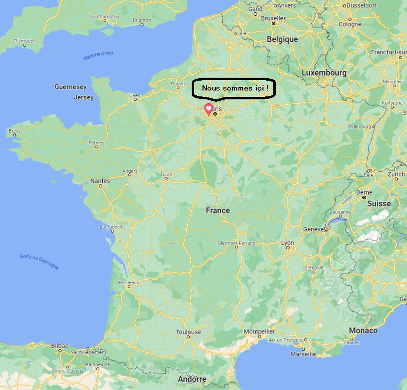

Notre Journal
Qui sommes nous?
Créé en février par trois jeunes étudiants engagés dans la vulgarisation et la transmition de la langue des signes, LLM (La Langue Muette) s'est agrandi jusqu'à devenir cette association mondialement connue et sans frontière.
Que faisons nous ?
Notre objectif est de répandre premièrement en France mais aussi dans le monde entier la langue des signes française, ainsi nous proposons une formation au signes les plus basiques, offerte par des experts altruistes ayant envie de partager leurs connaissances.
-

Nos bureaux sont situés à Versailles depuis la création de l'entreprise.
Ce site est totalement gratuit ! Il a été créé pour vous aider et permettre à chacun d'accéder à des contenus de qualité pour apprendre. Vous pouvez tout de même soutenir les actions de l'association créatrice de ce site pour nous permettre de l'améliorer et de nous aider à nous diversifier. Merci d'avance.